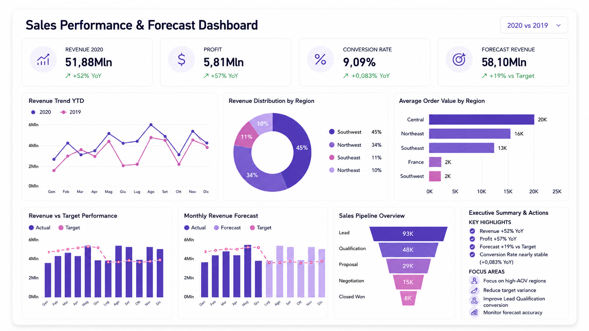
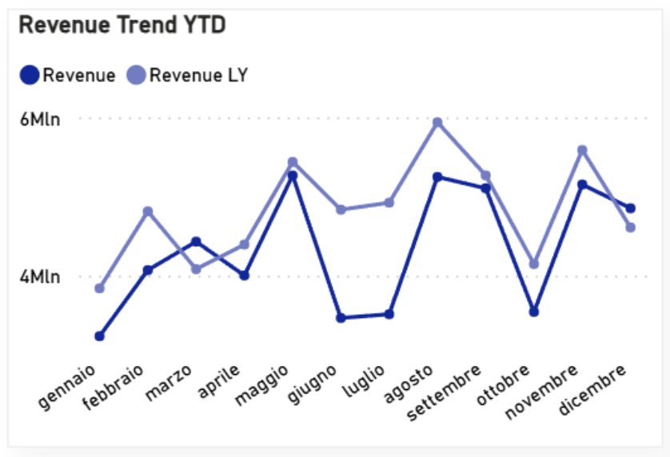
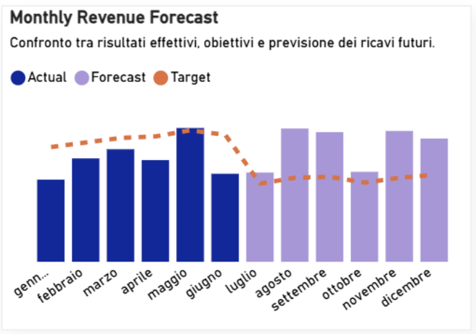
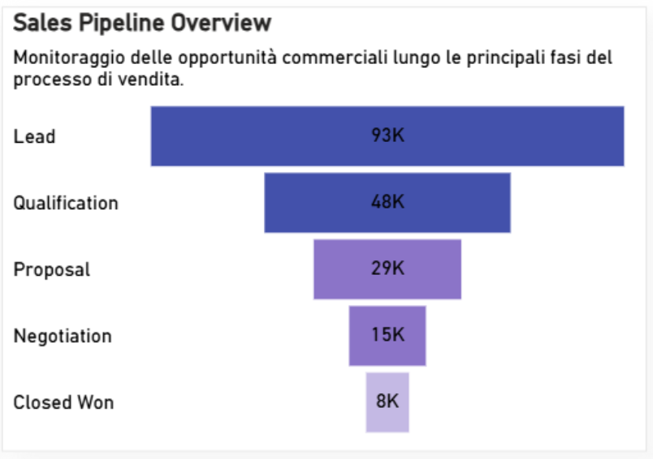

Revenue
51,88Mln
+52% YoY
Revenue shows significant growth compared to the previous year, confirming a positive sales performance trend.
BUSINESS CASE STUDY
A Power BI dashboard designed to monitor sales performance, compare actual results against targets, analyze the sales pipeline, and support future revenue forecasting.

Executive Snapshot
A concise overview of the main insights from the dashboard: revenue growth, profit increase, stable conversion rate, and a positive forecast compared to target.
Revenue
+52% YoY
Revenue shows significant growth compared to the previous year, confirming a positive sales performance trend.
Profit
+57% YoY
Profitability grows faster than revenue, highlighting an improvement in the economic quality of sales.
Conversion Rate
+0,083% YoY
The conversion rate remains almost stable, highlighting an area to monitor in order to improve sales efficiency.
Forecast Revenue
+19% vs Target
The revenue forecast exceeds the target, providing a useful basis to evaluate future performance and sales priorities.
Top Region
Southwest
Geographic distribution highlights a dominant region in the revenue mix and supports targeted investment decisions.
Pipeline
Lead stage
The sales funnel shows volumes across the different stages of the sales process, from lead generation to closing.
Dashboard Preview
The dashboard combines sales KPIs, revenue trends, geographic distribution, forecast, performance versus target, and sales pipeline into one decision-oriented view.
Click the dashboard to view it in full screen.
Context
Sales performance does not depend on a single indicator: to correctly interpret business trends, it is necessary to connect revenue, profit, conversion, geographic distribution, targets, and future forecasts into one analytical view.
Business Challenge
The sales analysis required a clear reading of results, variances against targets, and improvement opportunities across the sales funnel.
The need to compare actual results with revenue targets in order to identify variances and areas requiring attention.
Lack of an immediate view of future revenue forecasts and their alignment with business targets.
The need to monitor sales opportunities across the sales process to understand conversion and drop-off between stages.
Analytical Approach
The project was developed through a structured analytical process: from defining sales KPIs to reading variances, forecasting results, and generating operational recommendations.
Identification of the key metrics needed to monitor revenue, profit, conversion, and sales performance.
Year-over-year comparison and monthly revenue analysis to identify patterns, peaks, and performance declines.
Integrated reading of actual results, assigned targets, and forecast to evaluate distance from objectives.
Sales funnel analysis to understand critical stages and support decisions on conversion and sales priorities.
Solution Developed
The dashboard was designed to support sales decision-making through an integrated framework of KPIs, revenue analysis, forecast, and pipeline. The goal is to provide a clear reading of current and future performance, making it easier to monitor targets and identify business priorities.



KPI Framework
Dashboard indicators were organized into three analytical areas to connect economic performance, forecasting, and the sales process.
Area 01
Measures sales economic performance and the business’s ability to generate revenue and profit.
Revenue • Profit • Conversion • YoY
Area 02
Analyzes the relationship between actual results, assigned targets, and future revenue forecasts.
Actual • Forecast • Target • Variance
Area 03
Highlights geographic revenue distribution and opportunity behavior across the sales funnel.
Region Mix • AOV • Pipeline • Lead
Project Results
The project translated the main sales performance signals into a clear decision-support view, useful for monitoring growth, targets, forecast, and improvement opportunities.
0
Revenue YoY
0
Profit growth
0
Forecast vs Target
0
Conversion Rate
I design Power BI dashboards and data storytelling solutions that make KPIs, trends, forecasts, and insights immediately usable for business decisions.
Free Consultation
Fill in the form and briefly describe your needs. I will get back to you to understand how to make your KPIs, reports, and dashboards clearer.